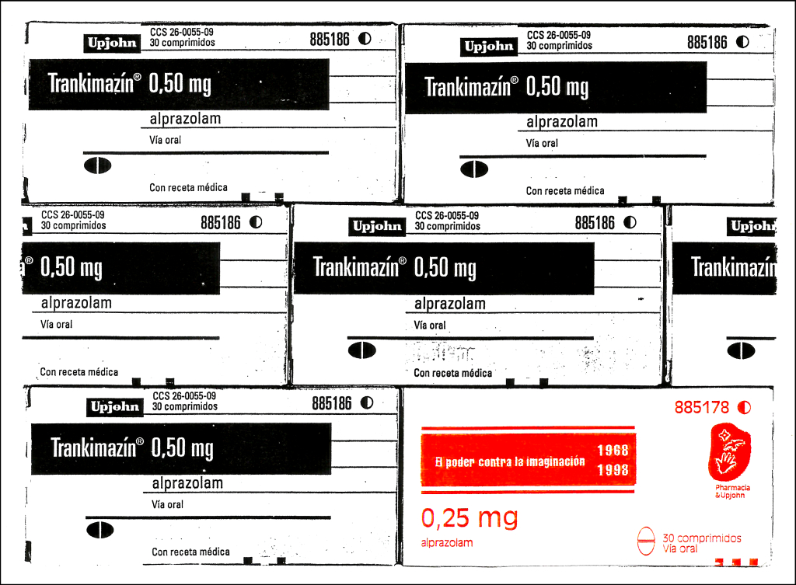

acció postal x col·lectiu stidna!, maig 1998

En plantejar el poeta visual Nel Amaro la possibilitat d'iniciar una sèrie d'accions entorn del 30 aniversari del maig del 68 la nostra primera reacció va ser d'escepticisme. Nosaltres estem convençuts que la lluita ha continuat en silenci, dia a dia, sense grans escarafalls però sense detenir-se. No obstant això, coneixent a qui està darrere de la idea pensem que aquest projecte podia servir com a punt de trobada entre un grup de gent que, sense descans i de manera callada, portem temps en la lluita.
Maig del 68 no és per a nosaltres un referent important, érem massa nens quan va succeir perquè ens afectés i no ha influït massa en la nostra vida, potser hem rebut la influència de les imatges que ens ha transmès l'imaginari popular: les barricades i els eslògans; i la decepció de saber que molts dels quals ara estan en el poder es consideren hereus d'aquell maig. Tal vegada per a nosaltres sigui més important un altre aniversari que se celebra aquest any: el 150 aniversari de la publicació del Manifest Comunista. La potència del pensament únic neo-liberal en els nostres dies ens fa retrotreure no a la situació de 1968 sinó a la de 1848, per a nosaltres està vigent no la revolució de 1968 sinó les revolucions de 1848.
Com dèiem més amunt, maig del 68 va fixar en l'imaginari popular tota una sèrie de consignes que encara avui perduren com a mostra de l'esperit transgressor. A nosaltres, maig del 68 ens portava a la ment l'eslògan "la imaginació al poder". Una obra sobre maig del 68 avui, 30 anys després, havia de tractar d'imaginació i poder. El pensament únic que se'ns imposa en tots els aspectes de la vida, aquesta ideologia filla i aliada del poder, que ens asfixia i oprimeix, està, encara més en 1998, contra la imaginació. Per això, com a contribució al projecte, hem editat una postal titulada "El poder contra la imaginació 1968 - 1998" amb la qual volem denunciar una de les formes més cruels que té el poder avui de desarmar ideològicament a l'individu, apartant-li dels seus semblants i de la lluita compartida amb ells i, per tant, de fer callar la rebel·lió.